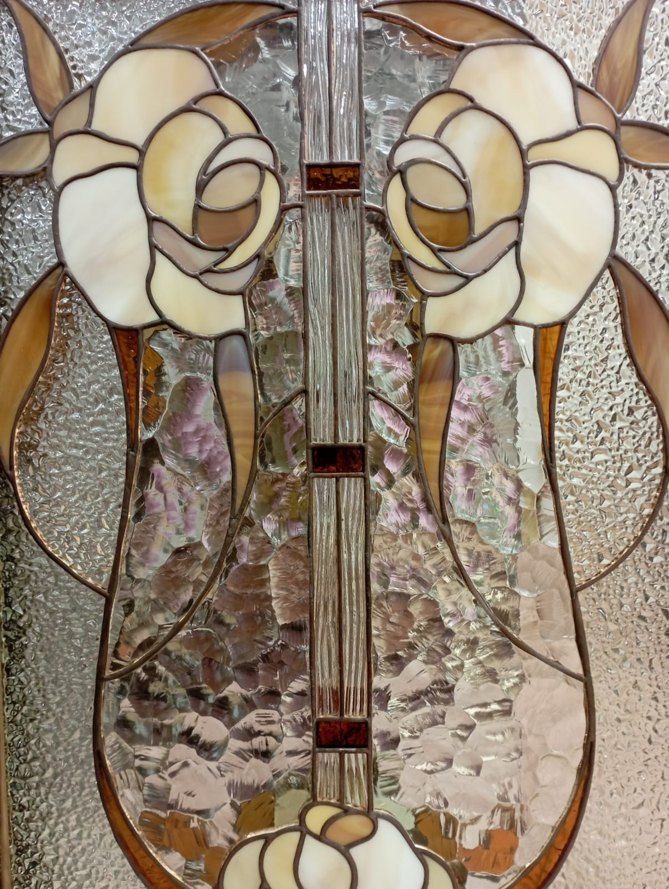
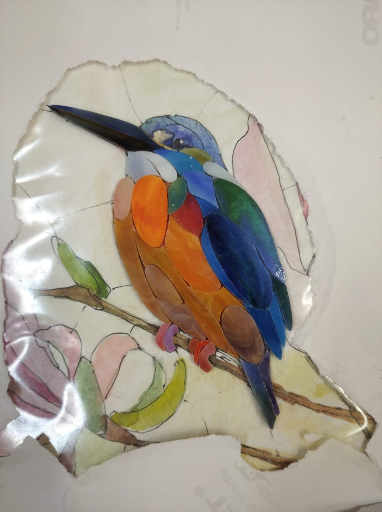

Возвращаем жизнь старинным витражам. Каждое стекло хранит историю — наша задача сберечь её, восстановив утраченную красоту бережно и точно.
Работаем с витражами любого возраста и состояния. От фрагментов до полного восстановления.
Восстановление паяных соединений, замена повреждённых стёкол с подбором по цвету и фактуре. Работа с оригинальной медной фольгой и свинцовым припоем.
Реставрация храмовых витражей с сохранением канонической иконографии. Укрепление свинцовой протяжки, восстановление росписи по стеклу.
Работа со старинными декоративными панно из цветного стекла. Консервация, восстановление недостающих фрагментов, укрепление конструкции.
Реставрация витражей — это не просто ремонт. Это кропотливая работа на стыке ремесла и искусствоведения. Когда к нам попадает старинный витраж с трещинами, выпавшими стёклами и потемневшей пайкой, мы видим не поломку — мы видим историю, которую нужно сохранить.
За годы работы через мастерскую прошли витражи начала XX века из московских особняков, церковные окна, пострадавшие от времени и небрежного хранения, фамильные панно, которые передавались из поколения в поколение. Каждый случай уникален: где-то достаточно аккуратно перепаять швы и заменить пару фрагментов, а где-то приходится полностью разбирать конструкцию и собирать заново.
Мы принципиально работаем только с материалами, соответствующими эпохе витража. Если оригинал собран на свинцовом профиле — используем свинец. Если применялась техника Тиффани с медной фольгой — берём фольгу. Стёкла для замены подбираем по цвету, прозрачности и текстуре, чтобы восстановленный фрагмент не отличался от соседних.
Особое внимание уделяем документированию. Перед началом работ фиксируем состояние каждого элемента: фотографируем, составляем схему повреждений, описываем материалы. Это важно и для заказчика, и для истории самого витража.
От первого осмотра до установки на место — каждый шаг выверен и задокументирован.
Выезжаем на объект или принимаем витраж в мастерской. Определяем степень повреждений, материалы, технику изготовления.
Фотофиксация, составление карты повреждений, описание каждого фрагмента. Согласование объёма работ и сроков.
Аккуратный демонтаж витража с маркировкой каждого элемента. Сохраняем все оригинальные стёкла, которые можно использовать повторно.
Удаление загрязнений, окислов, старой замазки. Стёкла очищаем вручную, без агрессивной химии, чтобы не повредить роспись и патину.
Подбираем стёкла для замены разбитых элементов. Вырезаем по оригинальным шаблонам, добиваясь точного совпадения по цвету и текстуре.
Собираем витраж на оригинальном или восстановленном профиле. Пайка, замазка, патинирование. Устанавливаем на место с укреплением.


Пришлите фотографии витража — оценим состояние и расскажем, что можно сделать.
Опишите задачу через форму на сайте — ответим в течение дня. Расскажем о сроках, стоимости и порядке работ.
Обсудить реставрациюУдобнее в мессенджере? Отправьте фото витража — дадим предварительную оценку прямо в переписке.
WhatsApp